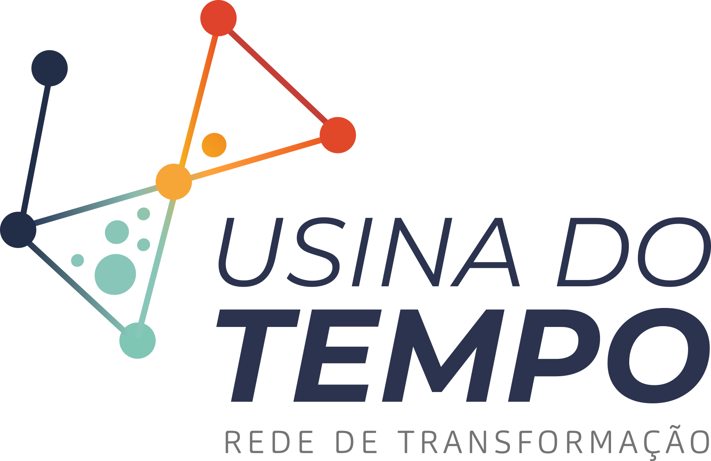

22 cursos, organizados por perfil, com o link oficial de cada um. Conferido no catálogo da Anthropic em 31/10/2026.
Em dúvida? Faça nesta ordem: AI Fluency: Framework & Foundations (a base, 4 h), depois AI Capabilities and Limitations (3,5 h) e então o curso do seu perfil. Os cursos técnicos ficam para o fim, se um dia fizerem sentido.
Ordem sugerida pela Usina do Tempo. Não é recomendação oficial da Anthropic.
AI Fluency for pK-12 Educators: trilha com 2 cursos para professores da educação básica. Abrir trilha
Material independente produzido pela Usina do Tempo. Não é afiliado, patrocinado nem endossado pela Anthropic. Nomes de cursos e marcas pertencem aos seus titulares. O catálogo muda: confirme sempre na página oficial (anthropic.skilljar.com). Agrupamento por perfil: critério editorial da Usina do Tempo. Última conferência: 31/10/2026.